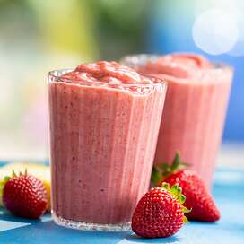

Fruit Smoothie Recipe

Description
This recipe will show you how to make a delicious
and nutritious fruit smoothie. You can use either
fresh or frozen fruit and have the option of adding
a number of supplemental protein foods. The only
appliance you will need is a blender.
Ingredients
- 1 Cup of your preferred milk
- 2 ripe Bananas
- 1 Cup of Strawberries
- 1 Cup other fresh or frozen fruit
- 1 Scoop protein powder or 1/2 cup Greek yogurt (optional)
- Pour the milk into the blender.
- Tear the bananas into small chunks and add.
- Remove bitter areas of the strawberries, cut each in half and add.
- add remaining fruit, breaking into small chunks.
- blend on a high speed until desired consistency is reached.
- If adding protein, add it to the smoothie and blend again until mixed.